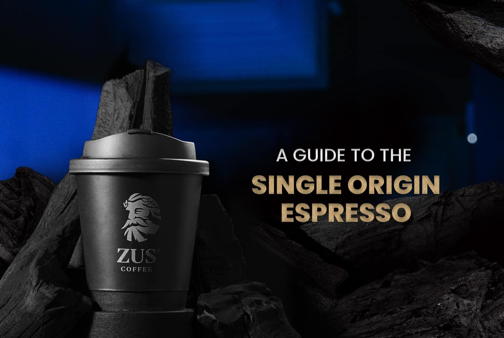

ZUS Coffee’s story began in 2019—not with a physical store, but through a forward-thinking mobile app. Driven by our founders' passion to reshape the specialty coffee scene, the goal was simple: to make high-quality coffee accessible to everyone. They envisioned a world where enjoying premium coffee didn’t mean compromising between quality and affordability.

From the first interaction on our app to launching our very first outlet in Malaysia, our purpose has always been to turn specialty coffee into an everyday essential. Our promise? Delivering clean, consistent, and carefully crafted coffee with every cup. To date, we’re proud to have served over 39 million cups—an achievement made possible by the trust and support of our cherished ZUSsies.
As we continue to grow, our belief holds strong: ZUS Coffee is a Necessity, not a Luxury.
.jpg?20250702)
ZUS Coffee has partnered with renown Coffee Roaster, Coffex Coffee, and are committed to the practice of only procuring Direct Trade Beans. Any form of green bean procurement is done directly with the farmers of the beans and allows for quality, sustainability, and fairer prices that is then translated to the final cup that our customers pay for. Direct Trade helps farmers develop with us and have a more sustainable future & growth together

Our baristas then craft each drink with precision—from grinding and tamping to brewing and presentation. We believe in transparency, sustainability, and honoring the farmers behind each bean.